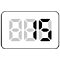

【015】配列の値を取得してコンソールに表示

- プロンプト例
JavaScriptで配列の値を取得してコンソールに表示する問題を５問作成して
JavaScript 配列の使いどころと重要ポイント
1. 配列とは？
複数のデータを1つにまとめて管理できる仕組みです。
const fruits = ["りんご", "バナナ", "みかん"];
- インデックス（番号）は 0 から始まる
- fruits[0] → "りんご"
2. 配列を使うメリット
同じ種類のデータを まとめて処理できる
const scores = [70, 85, 90, 60];
→ 繰り返し処理、検索、集計が簡単
3. よく使う基本操作（超重要）
① 追加
const arr = [1, 2]; arr.push(3); // 末尾に追加 arr.unshift(0); // 先頭に追加
② 削除
arr.pop(); // 末尾削除 arr.shift(); // 先頭削除
③ 取り出し
arr[1];
4. for / forEach / map の使い分け（最重要ポイント）
for文 → 自由度MAX
for (let i = 0; i < arr.length; i++) { console.log(arr[i]); }
forEach → 単純な繰り返し
arr.forEach(value => { console.log(value); });
map → 加工して新しい配列を作る
const doubled = arr.map(v => v * 2);
👉 map は元の配列を変更しない
5. filter / find / includes（実務で超多用）
条件で絞り込み → filter
const big = arr.filter(v => v > 5);
1件検索 → find
const result = arr.find(v => v > 5);
含まれるか → includes
arr.includes(3);
6. 配列操作の超重要ポイントまとめ
| ポイント | 理由 |
|---|---|
| map / filter を積極利用 | 簡潔でバグが少ない |
| for 文は複雑な処理向け | 制御しやすい |
| 直接書き換えを減らす | バグ・副作用防止 |
| length を意識 | ループミス防止 |
7. 実務でよくある使用例
APIデータ処理
users .filter(u => u.age >= 20) .map(u => u.name);
👉 条件 → 変換 → 出力 の流れが超定番
配列の値を取得して表示する練習問題
問題1：基本の配列アクセス
次の配列から 3番目の要素 を取得して、コンソールに表示してください。
const fruits = ['りんご', 'バナナ', 'みかん', 'ぶどう'];
問題2：インデックスを使う
次の配列から 最初の要素と最後の要素 を取得して、それぞれコンソールに表示してください。
const colors = ['赤', '青', '黄', '緑', '黒'];
問題3：for文を使う
次の配列の すべての要素を順番に コンソールに表示してください。
const numbers = [10, 20, 30, 40, 50];
問題4：偶数番目の要素だけ表示
次の配列から 偶数番目（インデックスが0,2,4...）の要素のみ をコンソールに表示してください。
const animals = ['犬', '猫', 'うさぎ', 'ぞう', 'きりん', 'さる'];
問題5：条件付きで取得
次の配列から 50以上の数値だけ を取得して、コンソールに表示してください。
const scores = [45, 72, 88, 34, 60, 91, 50];
✅ 解答例
問題1：3番目の要素を表示
const fruits = ['りんご', 'バナナ', 'みかん', 'ぶどう']; console.log(fruits[2]);
問題2：最初と最後の要素を表示
const colors = ['赤', '青', '黄', '緑', '黒']; console.log(colors[0]); console.log(colors[colors.length - 1]);
問題3：すべての要素を表示（for文）
const numbers = [10, 20, 30, 40, 50]; for (let i = 0; i < numbers.length; i++) { console.log(numbers[i]); }
問題4：偶数番目の要素のみ表示
const animals = ['犬', '猫', 'うさぎ', 'ぞう', 'きりん', 'さる']; for (let i = 0; i < animals.length; i += 2) { console.log(animals[i]); }
問題5：50以上の数値のみ表示
for文バージョン
const scores = [45, 72, 88, 34, 60, 91, 50]; for (let i = 0; i < scores.length; i++) { if (scores[i] >= 50) { console.log(scores[i]); } }
filter を使う方法（モダンな書き方）
const scores = [45, 72, 88, 34, 60, 91, 50]; const result = scores.filter(score => score >= 50); console.log(result);